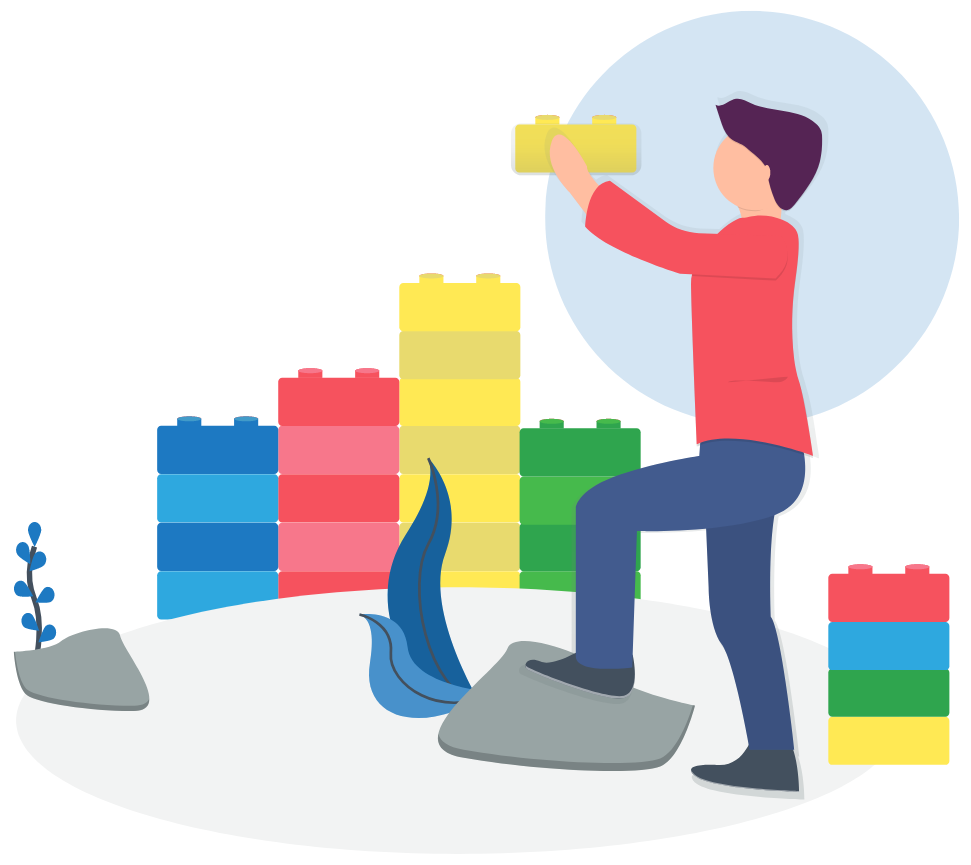

_ _ _ _ _ _ _ _ _ _ _ _ _ _ _ _ _ _ _ _ _ _ _ _ _ _ _ _ _ _ _ _ _ _ _ _ _
Presentación Introweb
_ _ _ _ _ _ _ _ _ _ _ _ _ _ _ _ _ _ _ _ _ _ _ _ _ _ _ _ _ _ _ _ _ _ _ _ _
¿Para qué hicimos Introweb?
- Hay gente que no sabe de tecnología.
- Hay gente que siente respeto o miedo al trabajar con tecnología.
- Empresas que no tienen departamento de desarrollo de software.
¿Para qué hicimos Introweb?
Sin embargo, todos tienen la necesidad de generar contenido que aporte valor a sus negocios.


¿Por qué nos embarcamos en la creación de un producto?
- Los clientes nos pedían proyectos similares, que en muchas ocasiones nos hacían enfrentarnos a problemas similares.
- Crear una base sobre la que desarrollar proyectos a medida.
- Hacer más eficiente el proceso de construcción de portales.
¿Por qué nos embarcamos en la creación de un producto?
- Encontramos las piezas de tecnología adecuadas.
- Con Docker podíamos empaquetar nuestro producto y desplegar N veces de una forma sencilla.
- CI, automatización de despliegues, backups, tests, ..., actualizaciones en caliente (blue & green deployment).
Productos existentes
SAAS
Productos existentes
SAAS
Muy potentes, escasa o nula atención al cliente
Cliente cautivo. Comisión por venta. (Hawkers)
Productos existentes
On premise
Wordpress, Prestashop, Magento
Todos son gratis

Productos existentes
On premise
- Si quieres hacer un proyecto mediano necesitas la ayuda de una agencia.
- En muchos casos tendrás varios proveedores: dominio, hosting, desarrollo, diseño, ...
- Problema de las actualizaciones, plugins de terceros, etc.
- Escalabilidad
- Manejo de altos volúmenes de tráfico en campañas puntuales
¿Qué es Introweb?
- Introweb cubre todas estas necesidades.
- Solución empresarial.
- Ideal para corporaciones con necesidad de crear muchos portales.
Ej. Ayuntamientos, grandes empresas. -
Resuelve el problema de la gestión de contenidos y del mantenimiento.
Uno para controlarlos a todos.
Usarlo es como jugar con Lego
Basado en bloques

Fácil de usar con drag & drop
Modular => poder segmentar mercados.
Funcionalidades genéricas
- Landing pages
- Blog
- Eventos
- Servicios
- Portfolio
- Miembros
Específicas
- Hoteles
Específicas
- Restaurantes
Específicas
- Comercio electrónico
Gracias